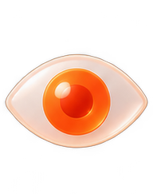
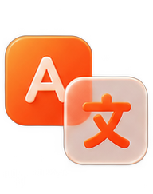

Direção criativa
Conceito, linguagem, narrativa, sistemas visuais e tomada de decisão criativa.
Publicitário, fotógrafo e diretor criativo. Trabalha na intersecção entre conceito, imagem, tecnologia e inteligência artificial para transformar ideias em sistemas visuais, experiências e comunicação que tenha forma própria.
O JEITO DE OLHAR
Depois de anos entre publicidade, fotografia e direção criativa, Vinisius viu ferramenta nova chegar com cara de revolução mais vezes do que dá para contar. O que muda de verdade não é ter acesso à novidade, mas o momento em que ela deixa de ser truque e começa a fazer parte de um jeito melhor de pensar e produzir.
Por isso ele trata IA como matéria de laboratório. Testa cedo, força limite, mistura com repertório, imagem, narrativa e produção real. A implementação começa quando a experiência encontra um briefing de verdade e consegue sobreviver a prazo, cliente, canal, orçamento e padrão de qualidade.
O valor não está em gerar cem imagens onde antes havia dez. Está em abrir possibilidades que seriam caras, lentas ou simplesmente improváveis — e ainda saber escolher uma. Direção continua sendo a diferença entre volume e significado.
As barreiras aparecem quando a tecnologia corre mais rápido que a linguagem, quando ninguém sabe o que está tentando melhorar ou quando um fluxo novo não conversa com quem precisa usá-lo. O approach é bem prático: experimentar sem cerimônia, organizar o que funcionou e transformar descoberta em sistema criativo repetível.
Conceito, linguagem, narrativa, sistemas visuais e tomada de decisão criativa.

Fotografia, audiovisual, composição, direção de arte e construção de universos visuais.
IA generativa aplicada a ideação, produção, experimentação e novas linguagens.
PROJETOS
Quando existe uma ideia ainda sem forma, uma marca precisando de uma linguagem nova, uma campanha que pede um sistema visual incomum ou uma tecnologia que precisa deixar de parecer tecnologia e começar a funcionar como experiência.

CONTATO
Conte o contexto, o que precisa mudar e onde a ideia ainda está travada.
Falar sobre um projeto↗